China Digital Innovation Platform
Advanced Push Notification System
As a responsible designer in the China Digital Innovation Platform (CDIP) team, I designed features for Philips administrator portal to manage various Philips digital propositions.
One of the key features that I worked on was 'Advanced Query' functionality for push notifications. The feature allows operations (different roles of users have different authorities) to control push notification messages within connected propositions in Philips, i.e., Health-related digital apps, and specify various rules to filter out recipients that are aimed to recieve notification messages.
Background
China Digital Innovation Platform is a Philips R&D organization specifically focusing on digital innovation in China context. The organization is constantly evolving by tacking cutting edge technologies, e.g., AR, AI, Conversational UI and so on.
The design task that was given to me was vague in the begining; design a software portal that allows advanced push notification message system for various internal stakeholders.
To define the challenges more specifically, I’ve team up with the development team. Our major collaborative tools were Axure and Zeplin for efficient discussions about low-fidelity wireframes, and final UI specifications.
Design Concept
The fundamental design concept was building ‘logical query builder’ in a software platform, which is usable, clear and intuitive. My design focus was making logical workflow that can satisfy all required specifications from CDIP team, i.e., Sending messages every week Friday to whom are living in Shanghai and Beijing, age group 26-43, purchased xx product. Since the system should enable complex query building logic, systematic thinking and approach were essential to create usable UI design.
.png) 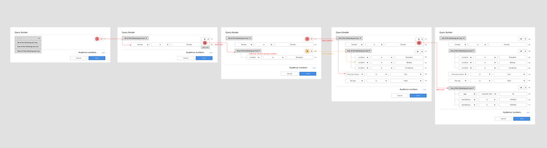
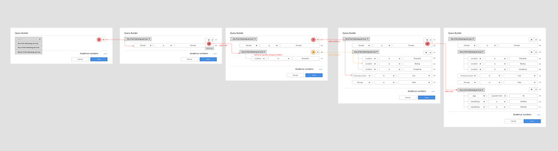
Design Outcome
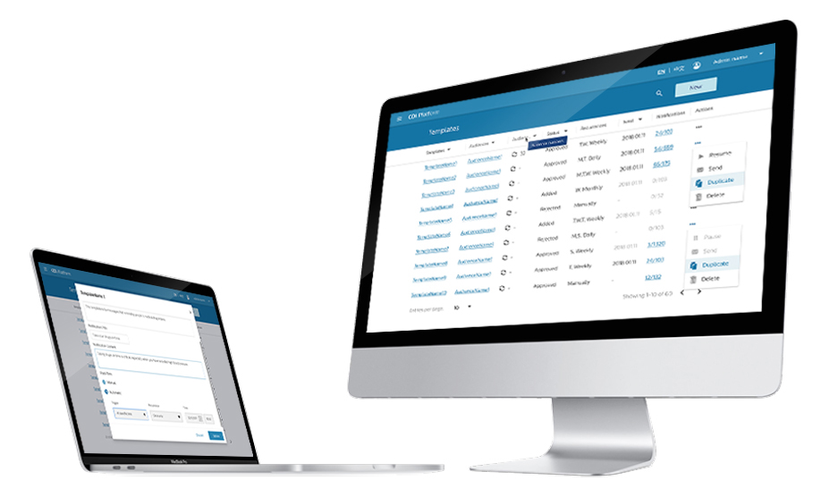 Final visuals for CDI platform
Design outcome includes not only the overall platform UI/UX design following Philips software Design Language System, but also pixel detailed UI designs for query builder, dashboard, audience management, message template, and notification history.
The platform has clear navigational structure with top navigation bar: menu, language option and user information, so that users can guide themselves to desired pages to sufficiently finish their tasks. In addition, each page provides relevant information that the user should know about based on their roles, i.e., administrator, analyst, etc, so they can effectively focus on their specific tasks only.
Dashboard
Dashboard allows users to access various pages for their tasks including user management as well as push notification. Since additional products would likely be added on the top of the current service, I’ve designed the dashboard layout in a grid system.
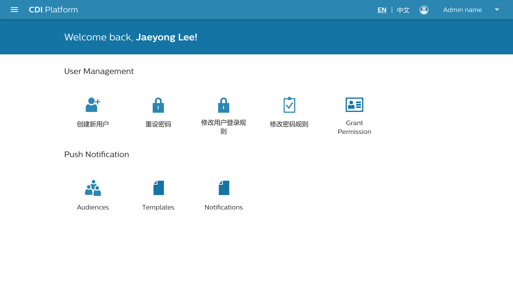Audiences
Audiences is a page that specifically handles target audience groups who would get push notification messages. Users (administrator and analyst) can designate particular user group by selecting a connected app and then building a query. Query builder can vary from simple to very complex based on the purpose, e.g., Female who is currently living in Beijing and purchased product A, age group 35-41, or Male who is living in Shanghai who are already married, and age group between 31-39; if any of the conditions matches, then the system find out the value, for example, 32.
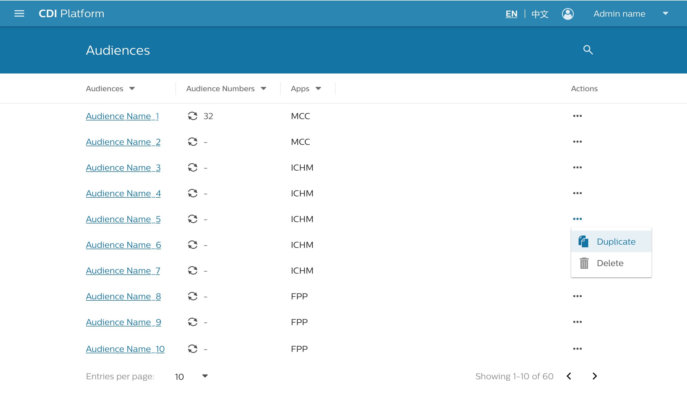 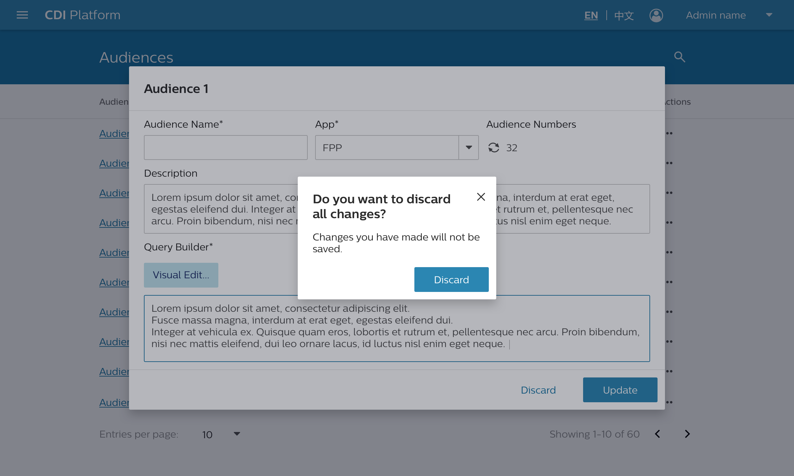
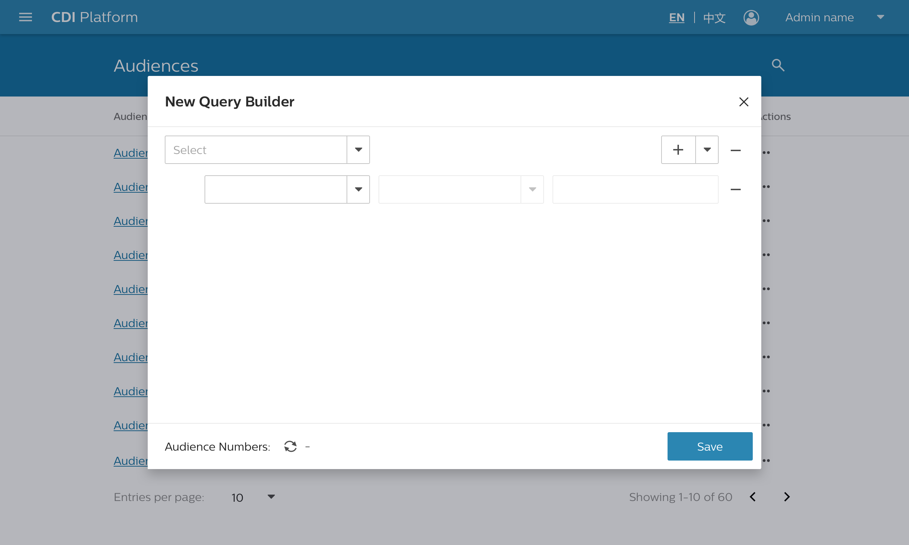
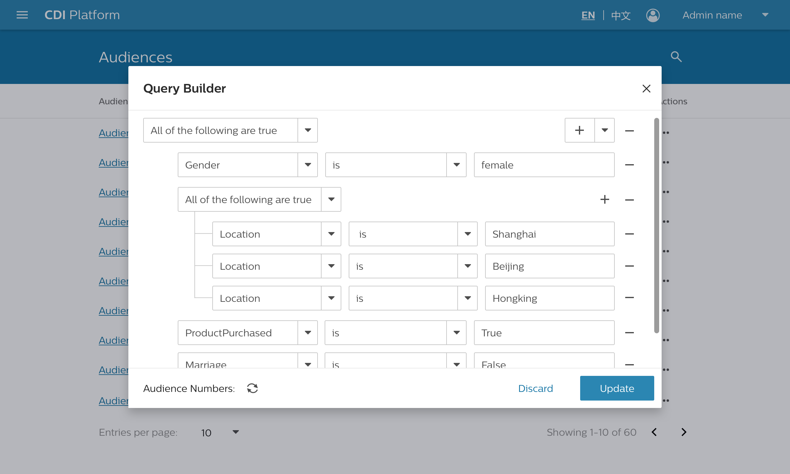
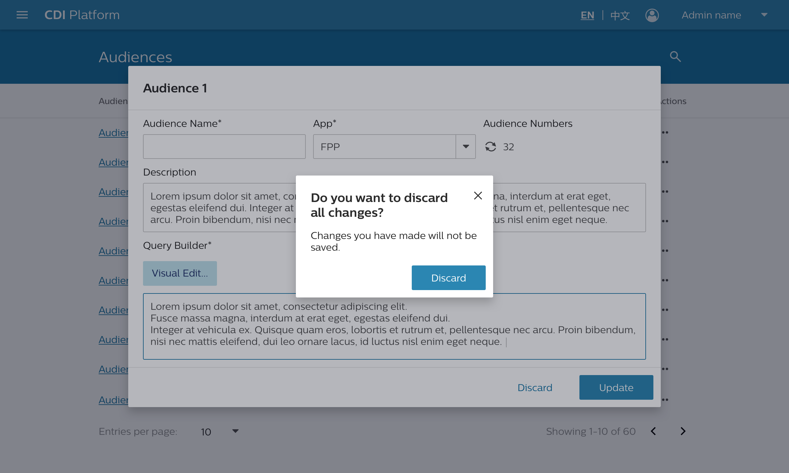
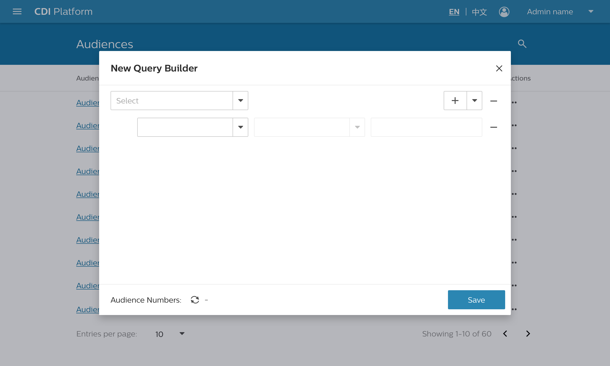
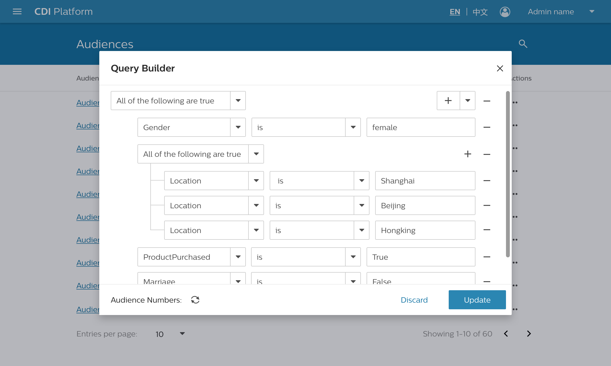
The Query builder provides different conditions: And, Or, Not. By selecting the condition first, users can define the relation between individual statements, i.e., condition ‘And’ means ‘Any of the following statement are true’, and ‘Or’ means ‘All of the following are true’. This is quite different with human language. Since in conversational contexts between people, the meaning of ‘And’ and ‘Or’ are normally used in the opposite way. To prevent this possible confusion, I decided to use explanatory conditions rather than using ‘And’, and ‘Or’.
Templates
Templates is a page that allows users create the templates of push notification messages. Users can define the messages: what, who, how much and how many, e.g., on every Monday and Sunday evening 18:00, send messages to audience group A for 3 months.


Templates can be created by administrators, analysts and operators, but only administrators can approve whether a template is okay to go or not. Thus, the system view of each role is slightly different; administrators can see the ‘approval section’ (see above image).
Notifications
In Notification page, users can see whole history of individual push notifications that have been sent or waiting. Each notification has its unique code number, and it is connected a push notification template and an audience group, so that users can see how many target audiences have got the specific message